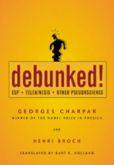

En Sardinia, Italia, años atrás, una estatua de la Virgen María comenzó a llorar lágrimas de sangre. Los fieles no tardaron en llegar a gemir con ella y muy pronto le atribuían todo lo bueno que pasara en sus vidas. Sin embargo, en 1995, una prueba de ADN reveló que la sangre en la efigie pertenecía al dueño del lugar, quien, por cierto, se ganaba la vida con la cantidad de peregrinos que atraía su prodigiosa llorona y quien, prontamente, contrató un abogado que defendiera su milagro. Joe Nickell, en los “Archivos escépticos” de la revista Skeptical Enquirer, escribe que el defensor, puesto en tan delicada posición, sugirió con un toque de desesperación que “de algún sitio tenía la virgen que sacar la sangre”.

Millones de personas en el mundo atribuyen poderes milagrosos a objetos inanimados. Nickell, en sus aventuras de investigación para el Comité por la Indagación Escéptica (Committe for Skeptical Inquiry, CSI) en Estados Unidos, ha logrado desenterrar las leyendas detrás de cientos conocidos milagros o lugares con poderes de curación que atraen a personas de todo el mundo en cruzadas muchas veces masivas. Desde el centenar de viales que promulga contener la sangre de Cristo hasta lugares declarados sagrados por distintas religiones, los análisis de Nickell apuntan hacia el sincretismo, la exageración y el egocentrismo humano, como elementos indispensables en la mayoría de sus conclusiones.
Decididamente, mucha gente dice observar milagros ocurrir todo el tiempo. Y no hablo de los que dulcemente llaman milagro al nacimiento de un niño o al amor entre dos personas; por el contrario, me refiero al milagro definido como una interrupción de las leyes naturales sin explicación evidente, ocurrencias que muchas veces ni siquiera son reconocidas como tales por las propias religiones. El catolicismo, por ejemplo, es bastante “estricto” a la hora de otorgar diplomas milagrosos ya que para ellos todo milagro llega de la mano de Dios, por lo tanto, no es algo que traten con ligereza. De hecho, esos milagros comunes que afectan a los ciudadanos a mi alrededor caen en zonas mágicas determinadas por lo supernatural y muchas religiones no aceptan la existencia de estos incidentes en sus confluencias. He notado, además, que numerosos religiosos ignoran este significativo dato.
Tomemos esta anécdota de mi amiga católica Rina, por ejemplo. Un día, mientras ella criticaba duramente la reputación de una mujer recién asesinada, el ventilador de su habitación se rompió, produciendo un ruido horrible. El grito de Rina se escuchó por toda la cuadra y desde ese momento ella cree que el espíritu de la víctima fue el causante de la rotura del aparato. Además del toque divertido de la anécdota, advierto un elemento adicional que puede afianzar este meme mucho más intensamente en la mente de Rina: la culpabilidad. Si la unimos a esa humorística coincidencia y al escenario que rige su cerebro donde distintas creencias dictan la percepción, extraemos una fórmula general para el establecimiento de creencias ilógicas. Probablemente, los hijos de Rina crecerán con este cuento como evidencia absoluta de la existencia de espíritus y fuerzas supernaturales.
Mientras Rina describía los hechos, visiblemente aterrada pues, entre otras cosas, bajaba el tono de voz cada vez que se refería a la difunta, yo pensaba en lo extraordinario. Hace mucho aprendí que la gente no toma afirmaciones descomunales a la ligera; a menos, por supuesto, que vengan de fuentes con “autoridad” o que de alguna forma confirmen sus dogmas. Si se me ocurre afirmar que Pan, aquel interesante dios griego fanático de la música y de las ninfas, me visita todas las noches para hablar conmigo sobre el estado de las cosas, las probabilidades de que se me aconseje varias visitas al psiquiatra son definitivamente altas. A lo mejor, una minoría le atribuya los hechos a su monstruo favorito (Lucifer, Shaitán o algún guna), pero creyentes o no creyentes pensarán que he perdido contacto con la realidad.
Ahora cambiemos el nombre del dios que me visita. Si mañana narro las mismas inquietantes vivencias pero cambio a Pan por Jehová, la percepción de los demás sobre mi estado mental cambiará drásticamente. La mayoría ya no sugerirá un psiquiatra sino más bien un pastor y lo llamará una experiencia religiosa, un milagro. La próxima parada no sería el psiquiátrico sino una capilla donde una multitud exaltada se alegrará de que Dios haya intervenido en mi vida. Curiosamente, aparte del cambio de la deidad, ambos eventos continúan siendo inconcebibles.
Los acontecimientos extraordinarios requieren de evidencias extraordinarias. No hay de otra. Un creyente exige estas pruebas cuando los milagros o la magia nadan contra sus dogmas, no obstante, aceptará sucesos extraordinarios sin evidencia alguna si sostienen sus doctrinas.
Un famoso personaje cristiano de la televisión dominicana no se cansa de insultar la brujería y el vudú. Empequeñece sus rituales, llamándolos basura y pura porquería inútil y reta constantemente a los brujos para que le “echen una maldición” o que le “hagan un trabajito”. Hace unos años, esta figura contrajo cáncer y su alto poder adquisitivo le permitió volar hacia hospitales en Estados Unidos donde recibió tratamientos médicos de primera. A su regreso y en estado de remisión, el señor le atribuyó aquella estupenda recuperación a su deidad personal. Debido a esta absurda actitud asumí que su próximo paso sería responsabilizar a los brujos del cáncer: si poderes extraordinarios se lo quitaron, pues es posible que poderes extraordinarios se lo hayan causado también. Pero los poderes del vudú no existen, los de su religión sí. Tristemente, tampoco mencionó la habilidad científica que hizo posible que siguiera vivo. No, luego de toda la energía y dinero gastados en su recuperación, realmente su Dios fue misericordioso con él, lo escogió para salvarlo, a pesar de que millones de buenos y fieles creyentes mueren de la misma condición.
Si le digo a Rina que necesita de evidencias extraordinarias para demostrar que la mujer asesinada destruyó su ventilador, no llegaré a ningún lado. Para mostrarle un poco de construcción lógica debo hablarle en su propio idioma y meterme de lleno en ese mundo sobrenatural que domina su pensamiento. Con el fin de revelarle lo caricaturesca que es su posición le pregunté, ¿si a ti alguien te mata y te encuentras de pronto en forma de espíritu pero con el poder para romper ventiladores, malgastarías tu tiempo asustando a una desconocida porque está hablando mal de ti o lo usarías para acosar hasta la muerte a tu asesino? Rina, que no es tonta, aceptó la retórica pregunta como válida y nunca más me contó la historia. Que no quiere decir que haya dejado de creerla, a lo mejor otra variación sobrenatural explica de forma más específica su terroríficamente cómica anécdota.
El mismo tipo de razonamiento me sobrecoge frente a las estatuas que lloran. ¿Qué maldición tan enorme las mantiene limitadas a estas insípidas ocurrencias?, ¿son estos los únicos milagros que se les permite producir? Porque, realmente, necesitamos héroes con poderes un poco más útiles. En la actualidad, la indagación escéptica llama a estos milagros “fraudes piadosos”. El surgimiento de centros de investigación y el desarrollo de tecnologías cada vez más asequibles, asignan causas lógicas a estos acontecimientos, que muchas veces son sólo fraudes; aunque no siempre sean piadosos.

Aún así, los milagros han perdido fuerza. A lo mejor, la interpretación que den a nuestros siglos los humanos futuros pinte el presente de otro color. Eso nunca lo sabremos. Por el momento, los milagros modernos ya no llegan ni a los periódicos locales. De hecho, las lágrimas de la Virgen todavía se encuentran entre los primeros lugares de las listas milagrosas y retienen cierta “clase” en comparación con las populares tostadas de pan talladas naturalmente con rostros de profetas o la producción continua de arena por algún gurú hindú.
Yo necesitaría de mucho más. Un milagro real que probaría para siempre la existencia de una fuerza sobrenatural que no entendemos pero que afecta directamente nuestras vidas sería que mañana todo ciudadano del planeta se despertara completamente sano, sin rastro alguno de la enfermedad que lo azotaba. Contundentes demostraciones de este tipo cambiarían radicalmente mi forma de pensar sobre el Universo. Mas no el cuento del ventilador de Rina ni las lágrimas sobre el rostro de alguna estatua, eso es como creer que Elvis vive sólo porque te pareció verlo en Las Vegas.
La ley de los números grandes
Un milagro por mes
La ley matemática de números grandes nos dice que un evento con pocas probabilidades de ocurrencia entre una cantidad pequeña de personas posee una alta probabilidad de incidencia en una cantidad grande de personas. Michael Shermer, autor de varios libros, entre ellos el popularmente conocido Por qué las personas creen cosas raras, utiliza las explicaciones usadas por los físicos Georges Charpak, del CERN y Henry Broch, de la Universidad de Niza, en el libro Debunked, sobre el análisis de estadísticas entre cantidades enormes.
“Muchas personas me cuentan anécdotas sobre sueños o pensamientos que tuvieron de un amigo horas antes de esta persona morir o de ellos enterarse de su muerte. No poseer una respuesta inmediata que explique este suceso es para ellos evidencia suficiente de que la ocurrencia es real y existen poderes sobrenaturales que los humanos no comprenderemos nunca. Sin embargo, estos eventos suelen ser explicados por medio de un iluminado análisis estadístico. No es lo mismo la posibilidad de ocurrencia de una coincidencia extrema entre 50 personas que entre 50 millones de personas y, mientras más aumenta el número, más crece la probabilidad de que ocurra. En Debunked, los autores expresan que en el caso de premoniciones de muerte tendríamos que suponer lo siguiente: si conoces diez personas que mueren al año y en las que piensas una vez al año, entonces debes calcular que un año contiene 105.120 intervalos de cinco minutos en los que podrías estar pensando en cada una de esas diez personas, lo que nos deja una probabilidad de una entre 10.512, un evento altamente improbable. Sin embargo, hay al menos 295 millones de estadounidenses y este número aumenta la cifra anterior a 77 personas por día para los que esta improbable premonición se convierte en una probabilidad establecida”.

Shermer sugiere que si sólo 2 de estas 77 personas sale en el programa de Oprah a narrar sus experiencias premonitorias, el asunto de lo sobrenatural aparentemente queda validado por el supuesto alto índice de ocurrencia cuando todo lo que han hecho es demostrar las leyes de la probabilidad entre grandes cantidades.
Otra forma de estudiar las incidencias de fenómenos paranormales es usar la Ley de los milagros de Littlewood, propuesta por John Littlewood, matemático de la Universidad de Cambridge, que asegura que, de acuerdo a cálculos estadísticos sobre el bombardeo de eventos que recibimos todo el tiempo en que estamos despiertos, debemos esperar, por lo menos, la ocurrencia de un milagro al mes”.

Pero las anécdotas supernaturales tienen la dulce característica de convertirnos en personajes especiales y confieren a los demás la ilusoria idea de que son verdaderas, un hecho que valida cualquier tipo de creencia. No obstante, la única forma de demostrar que estas narrativas individuales son acertadas es mediante la administración de pruebas científicas controladas, como las conducidas por la Fundación Educacional de James Randi. Hasta el momento, ningún evento psíquico ha podido ser replicado en experimentos y la respuesta de los paranormales frente a estos resultados negativos se asemeja a la del abogado en Sardinia pues alega que todos sus poderes desaparecen bajo el ojo experimental y los intentos científicos de medirlos. Apropiadamente “cuántico” de ellos, es precisamente en esta zona donde Chopra cosecha sus honorarios.
Una persona que se jacte de poderes telepáticos debe ser capaz de usarlos en cualquier lugar y a cualquier hora, “o los tiene o no los tiene”, dice Shermer. Todas esas normas que se encuentran en la zona del medio entre tenerlos o no tenerlos sólo enmascaran los mecanismos detrás del truco. Y sabemos que cuando arremangas al mago, el hechizo tiende a desaparecer por completo.
Volver al índice de la Lupa Herética
© 2008-2021 Glenys Álvarez y Sin Dioses. Prohibida la reproducción con fines comerciales.
Comentarios
Comments powered by Disqus